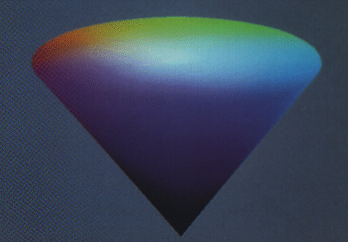

255 = 10u255 = 2u11111111 = 8u377 = 16uFF
En C u aŭ U estas finaĵo de sensignuma literalo (por la naturaj nombroj).
1996-02-29
putwchar(wchar_t c){
putchar(c ≫ 24 & 0xFF); /* grupo */
putchar(c ≫ 16 & 0xFF); /* ebeno */
putchar(c ≫ 8 & 0xFF); /* vico */
putchar(c & 0xFF); /* ĉelo */
} 2001-06-18
1999-03-20
Noto. Pri datumo, forumo vd ĉe datumo.
1996-02-29
Esperantigo de Unicode, internacia norma kodo por prezento de plurlingvaj tekstoj entenantaj signojn de diversaj alfabetoj (inklude la ĉinan kaj Esperantan). En ĝia signaro troveblas signoj de praktike ĉiuj nunaj homlingvaj alfabetoj kaj teĥnikaj simbolaroj. Ĉar la unubajta kodonlongo ne sufiĉas por tia celo, Unikodo adoptas 16-bitan kodan skemon, kies subkodo estas Askio.
Unikodo ankaŭ estas konata kiel 32-bita kodo ISO-10646 (UCS).
Eĉ se oni ne planas rekte realigi Unikodon sur sia komputilo, oni povas uzi ĝin por referenci plej diversajn simbolojn (kion ni faras en ĉi tiu Leksikono), apliki ĝin kiel pontolingvon ktp.

Angle: UNICODE
1998-03-01
Ω Esperantigo de UNIX.
1996-02-29
∏ Datumtipa konstruilo en ALGOL-68 kaj C, ebliganta malrigidigi la statikan tipkontrolon super la objektoj deklaritaj havi unian tipon.
Angle: union, union type
Ruse:
объединение
1996-02-29
Redaktilo de plataj tekstoj en Unikodo, funkcianta sub 32-bitaj Vindozoj, verkita de Jurij Finkel (http://www.esperanto.mv.ru/UniRed/UTF8/index.html).
2000-03-27
 Tia, ke ĝia absoluta valoro, normo aŭ alia karakterizo estas unu:
Tia, ke ĝia absoluta valoro, normo aŭ alia karakterizo estas unu:
Angle: unit …
France: unitaire, unité
Ruse: единичный
1998-09-11
Tia kvadrata matrico A super la
kompleksa kampo ℂ ke ĝiaj horizontaloj formas ortan unitan sistemon.
La ĵeto difinata de unita matrico konservas normon kaj skalaran produton de vektoroj; la absoluta valoro de ĝiaj ajgenoj estas 1.
Ekvivalentaj difinoj, aŭ kriterioj (AH estas la adjunkta matrico, I estas la unuomatrico):
Rim. La termino estas klarigebla per la sekva analogio:
Cetere, unita matrico havas la determinanton, normon, kaj ĉiujn ajgenojn unitaj. Ĝi ankaŭ estas diagonaligebla tiel ke la ĉefdiagonalo konsistu el tiaj unitaj ajgenoj; kp unuomatrico.
Angle:
unitary matrix
France: matrice unitaire
Germane: unitäre Matrix
Ruse: унитарная
матрица
1998-09-11
« Dividi (vektoron,
matricon, funkcion) per ĝia normo, tiel ke oni
ricevas elementon, kies normo egalas al unu» [PIV1]. Kp normigi, unita.
Angle: norm
France: normer
Germane: normieren
Ruse: нормировать
1998-08-06
La kvantoro ∀,
ĵetanta predikaton P al propozicio ∀x P(x), kiu asertas, ke
la validejo de P koincidas kun la variejo de ĝia argumento, t.e. ke «por ĉiuj
x veras P(x)»; ekz-e la propozicio
(∀α)(|sin α| ≤ 1)
Ofte oni limigas la variejon de la subkvantora variablo: (∀x)L(x)P(x) ekvivalentas al ∀x[L(x)⇒P(x)].
Noto. Normale ∀x estas legata «por ĉiu ikso» aŭ «por ĉiuj iksoj»; tamen cedante al la grafika formo de ∀ oni povus provi «por ajna ikso».
Angle: universal quantifier
Ruse: квантор
всеобщности
1996-02-29
Tia Turinga aŭtomato
U, kiu kapablas imiti ajnan alian Turingan aŭtomaton T.
Sur sia eniga rubando U ricevas Godelan numeron de la imitata
aŭtomato T (do fakte, ties programon — vd Godela numerado), kaj donaĵon por la
traktado per la T-algoritmo. Do, universala Turinga aŭtomato
funkcias simile al komputilo, ricevanta programon kaj ties donaĵojn. (Simile
oni diras pri funkcioj, vd Universalaj rekursiaj
funkcioj).
Angle: universal Turing machine
Ruse:
универсальная машина Тьюринга
1996-02-29
Aro fiksita kadre de koncerna matematika teorio kaj
entenanta ĉiujn objektojn, studatajn en la teorio. Ekz-e por la elementa aritmetiko la universo estas la aro de ĉiuj
entjeroj; per aritmetikigo oni reduktas la
objektojn de multaj teorioj al ℕ, kiu estas kutima universo por la teorio
de algoritmoj.
Specialan problemon prezentas la koncepto de universo por la arteorio, kie «la kolekto de ĉiuj aroj» mem ne estas traktebla kiel aro (pro la multaj «paradoksoj arteoriaj», kiujn tio sekvigas).
Angle: universe (of discourse)
Ruse: универсум
1996-02-29
Operaciumo unue konstruita en Bell Laboratories por la komputiloj PDP-11 kaj larĝe disvastiĝinta super diversklasaj komputiloj. La apartaĵoj de UNIX: porteblo de programoj inter diverskomputilaj Uniksaj sistemoj; dialogemo; nefermiteco, ebliganta etendojn.
Respondaro: http://mist.npl.washington.edu/faq/unix-FAQ.html, http://www.cis.ohio-state.edu/hypertext/faq/usenet/unix-faq/faq/top.html.
Vd Linukso.
1998-06-26
Ebliganta transmeti datumojn nur en unu direkto. Kp dupleksa, alterndirekta.
Angle: simplex
Germane: unudirektional, einweg-.
1996-02-29
Grafeo kies neniajn du verticojn ligas pli ol unu eĝo (samdirekte); do, grafeo sen «oblaj eĝoj». Kp
plurgrafeo, nulgrafeo.
Angle: graph
Ruse: униграф
1996-02-29
Havanta unu operandon. La ĝeneralcelaj programlingvoj kutime disponigas la unulokajn operaciojn
Angle: unary, monadic
Germane: einstellig
Ruse: одноместный,
унарный
1996-02-29
Laŭ PIV1,
Vd neŭtra elemento; kp unita.
- Abstrakta kvanto, rigardata kiel la elementa nombro, kiu servas por formi la ceterajn: la deko konsistas el dek unuoj [Kabe]; skribi ciferon en la kolono de unuoj…
- Difinita kvanto, elektita por taksi per komparo la valoron de fizikaj grandoj … (=unito): la metro estas la universala unuo de longo.
Angle: unit, unity, identity element
Ruse: единица
1996-02-29
Diagonala matrico kiu havas la tutan ĉefdiagonalon el 1-oj. Tia matrico estas la
neŭtra elemento por la matrica multipliko. Oni ankaŭ povas
diri identomatrico, ĉar ĝi respondas al la idento-operatoro: I(x)=x. Simbole
E aŭ I.
Rim. Ni malpreferas la terminon matricunito [EKV]; kutime temas pri «matrico, kiu estas unuo (la
neŭtra elemento)», plie ol pri «unuo kiu estas matrico»; t.e. la
ĉefradiko estas «matrico», kiel cetere en la naciaj lingvoj.
Rim. Evidente, unuomatrico estas unita matrico, sed ne ĉiu unita matrico estas unuomatrico.
Angle: unity matrix, matrix unit
Germane: Einheitsmatrix
France: matrice identité, matrice unité
Ruse:
единичная матрица
1998-08-16
Maniero indiki koloron per la du koordinatoj en la kolorcirklo:

La bildo montras tian kolorspacon: la angulo estas mezurata en horizontala ebeno, la radiuso en la horizontala ebeno esprimas la puron, la vertikala akso (sur kiu situas la tuta grizo) kreskas kun la heldenso. La pinto (poluso) prezentas la nigron. Normale 0° respondas al la ruĝo; ĉi tiu bildo estas turnita je 240° (ni komencas per la esperantista verdo, kiu normale situas je 120°, sed ĉi tie ĝi rigardas dekstren).
Noto. Inter la pentristoj tiu sistemo havis aliajn anglajn nomojn: Tint, Shade and Tone.
Angle: HSB
(hue-saturation-brightness), HSV (hue-saturation-value)
France: couleur-saturation-valeur
Ruse:
цвет—насыщенность—яркость
1996-08-24
∏ Senkunteksta gramatiko aŭ senkunteksta lingvo, kiu ne estas plursenca.
Angle: unambiguous
Germane: eindeutig
Ruse: однозначный
1996-02-29
Maniero prezenti naturan nombron n
per n aperoj de signo (de la unuuma cifero). Unuuma nombrosistemo estas uzata en metamatematiko, kiel la plej naiva kaj
intuicie klara sistemo de nombroprezentado, sed por pli realismaj studoj de
la komplikteorio ĝi ne taŭgas. Alian
ekzemplon donas la matematika notacio por la derivado:
f, f′, f″, f″′, …
Angle:
unary number system
Ruse: единичная система
счисления
1996-02-29
 Unueca prezento de retadreso por referenci objekton (ekz-e dosieron) en la Interreto, ekz-e dosieron, retpoŝtan adreso aŭ forumon. URL-oj estas multe uzataj en la TTT-paĝoj por indiki la celon de iliaj ligiloj.
Unueca prezento de retadreso por referenci objekton (ekz-e dosieron) en la Interreto, ekz-e dosieron, retpoŝtan adreso aŭ forumon. URL-oj estas multe uzataj en la TTT-paĝoj por indiki la celon de iliaj ligiloj.
Noto. De la angla Uniform Resource Locator, antaŭe Universal Resource Locator, t.e. «Unuforma (resp. Universala) Risurca Lokindiko».
1996-02-29
 Tia, ke ĝi povas
estis minuskla (etlitera) aŭ
majuskla (ĉeflitera); registrumhava
(vd registrumo). Vd ankaŭ nomuskla.
Tia, ke ĝi povas
estis minuskla (etlitera) aŭ
majuskla (ĉeflitera); registrumhava
(vd registrumo). Vd ankaŭ nomuskla.
1997-02-02
Karakterizaĵo, kiu diferencigas la minusklajn (etliterojn) kaj majusklajn (ĉefliterojn) variojn de unu sama litero. Ankaŭ vd nomuskla, miksuskla.
Rim. Sekve, uskleco iom diferencas disde registrumo: ekz-e, mi povas diri, ke sur mia klavaro la dua klavo en la cifera horizontalo havas ciferon 1 en la suba registrumo, kaj la krisignon en la supra registrumo. Krome, oni povas paroli pri «stira», «alternativa», «rusa» registrumoj ktp.
Noto. La terminon «uskleco» enkondukis Simono Pejno por sia Ĉapelilo, kaj ĝi estas efektive uzata.
Angle: case
Ruse: регистр
1997-02-02
(Pri programaro, serĉo) kiu malatentas la usklecon de la literoj, kvankam (kontraste al usklecoviŝa) sen neniigi tiun distingon. Ekz-e en Paskalo kaj Ada la nomoj A kaj a estas samsignifaj, sed ilia surekranigo povas resti malsama; se oni volas trovi ĉiujn aperojn de vorto en la teksto, oni prefere uzu usklecoblindan serĉoreĝimon, por ne perdi la komencfrazajn aperojn (la nomusklajn). Kp usklecodistinga.
Angle: fold case
1998-11-22
(Pri programo aŭ serĉo) kiu atentas la usklecon de la literoj. Ekz-e en C la nomoj A kaj a estas distingendaj. Kp usklecoblinda.
Angle: case sensitive
1998-11-22
(Pri programo aŭ aparato) kiu malatentas kaj perdas, «viŝas» la usklecon de la literoj. Ekz-e MS-DOS registras ĉiujn dosiernomojn majuskligite. Kp usklecoblinda, usklecodistinga.
Angle: smash case
1998-11-22
Kodoprezento por Unikodo, maniero prezenti la kodonojn de Unikodo per varilonga kodo, uzata ekz-e en TTT.
Signante la 16 bitpoziciojn de kodono k per
pF pE pD pC pB pA p9 p8 q7 q6 q5 q4 q3 q2 q1 q0
ni havos jenajn prezentojn:
| k<128 | 0 q6 q5 q4 q3 q2 q1 q0 | ||
|---|---|---|---|
| k<2¹¹ | 1 1 0 pA p9 p8 q7 q6 | 1 0 q5 q4 q3 q2 q1 q0 | |
| k<2¹⁶ | 1 1 1 0 pF pE pD pC | 1 0 pB pA p9 p8 q7 q6 | 1 0 q5 q4 q3 q2 q1 q0 |
| La 1a bajto | La 2a bajto | La 3a bajto |
Do, UTF-8 estas kongrua malplien kun Askio. Ĝi estas pli lokŝpara ol la kruda 2-bajta Unikodo, se uzata por prezenti tekstojn en la novlatinaj alfabetoj, kaj ne pli malbona ol Unikodo por la alfabetaj lingvoj (ekz-e la rusa).
La literoj de Esperanto en UTF-8:
| UCS-2 | 10-ume | 16-ume | Signo |
|---|---|---|---|
| 0x108 | 196 136 | C4 88 | Ĉ |
| 0x109 | 196 137 | C4 89 | ĉ |
| 0x11C | 196 156 | C4 9C | Ĝ |
| 0x11D | 196 157 | C4 9D | ĝ |
| 0x124 | 196 164 | C4 A4 | Ĥ |
| 0x125 | 196 165 | C4 A5 | ĥ |
| 0x134 | 196 180 | C4 B4 | Ĵ |
| 0x135 | 196 181 | C4 B5 | ĵ |
| 0x15C | 197 156 | C5 9C | Ŝ |
| 0x15D | 197 157 | C5 9D | ŝ |
| 0x16C | 197 172 | C5 AC | Ŭ |
| 0x16D | 197 173 | C5 AD | ŭ |
2001-03-18
Ĉiu el la aro da relative simplaj servoprogramoj, realigantaj «utilajn», ofte bezonatajn laborojn, ekz-e kopiadon de dosieroj, ordigojn ktp. Kp aplikaĵo.
Angle: utility,
utility program
France: programme de service, (programme) utilitaire
Germane: Dienstprogramm
Ruse: сервисная
программа, утилита
1996-02-29
Noto. Uzulo neprigas homecon, uzanto povas esti procezo.
Angle: user
France: utilisateur
Pole: użytkownik
Ruse: пользователь
1996-02-29
Ω En pluruzula operaciumo, unika entjero identiganta uzanton. En la operaciumo la uzantonumero servas por indiki la uzanton en diversaj datumstrukturoj (ekz-e la posedanton de dosiero aŭ procezo). Ekz-e en Unikso la ĉefuzanto havas la uzantonumeron 0.
Priuzanta datumbazo, ekz-e la Uniksa dosiero /etc/passwd aŭ NIS, ĵetas uzantonumerojn en la salutnomojn, pasvortojn, hejmajn dosierujojn kaj aliajn datumojn pri la uzantoj.
Angle: user id,
user identifier, uid
Ruse: код идентификации
пользователя
1999-04-01
Parto de dokumentaro pri programa aŭ aparata produkto klariganta ties aplikon el la vidpunkto de uzulo.
Noto. La tradicia faka misuzo malebligas instrukcion, kiu estus pli konforma al la komunlingva uzado.
Angle: user guide, user manual
France: manuel d'utilisateur
Germane: Bedienungsanleitung
Pole: instrukcja
Ruse: руководство
пользователя
1996-02-29
Uzanto kiu estas homo. Vd fina uzulo.
Noto. Iuj kritikas la terminon «uzulo», ĉar laŭ ili (kaj laŭ PAG) la sufikso esprimas «konstantan, esencan trajton». Tio ne estas vera, kiel atestas multaj ekzemploj kie -ul formas situacian nomon: aliulo, eksterulo, fremdulo, koncernulo, kontraŭulo, kunulo, posteulo, proksimulo, rolulo, superulo. Ankaŭ malsanulo espereble ne estas konstanta trajo (fakte, en malsanulejo ĝi estas situacia rolnomo, sinomima kaj etimologie egala al «paciento»).
Plej gravas ke la substantivbaza uzulo estas pli oportuna termino ol la adjektivbaza uzanto; kp «uzula interfaco» kaj «uzanta interfaco», «uzula manlibro» kaj «uzanta manlibro» ktp.
Angle: user
France: usager
Pole: użytkownik
Ruse: пользователь
1996-02-29
La 26a el la literoj de Esperanto; oni uzas la askiigojn ^u, w, ux aŭ vx. Vd lunarko, hok(et)o.
La vx-stilo ebligas prezenti plurlingvajn tekstojn — ekz-e,
Avxdigxis vocxo: "Why this auxiliary law?" Letero de Zamenhof al Michaux.
— sed la leksikografia ordigo per porangla ordigilo (indeksofarilo ktp) funkcios pli fuŝe: v<vx, tial avx (= aŭ) aperos post avo.
Noto. Por la uzo de vx por ŭ estas pluraj argumentoj lingvistikaj:
Angle: latin letter u with breve
Ruse: латинская буква У с краткой
1996-12-08